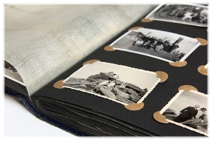

| É permitida a reprodução do conteúdo deste site, por qualquer meio, desde que informado por escrito aos autores. | | Site produzido por Guilherme Rocha da Cruz | |
| Pesquisa, coleta de dados e arquivamento de documentos: Guilherme Rocha da Cruz e Sandra Helena Rocha da Cruz | | Todas as fontes de pesquisa estão devidamente listadas no menu Fontes. | |